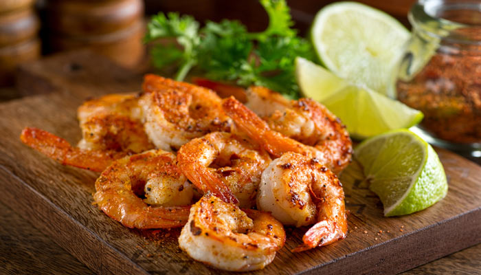

Ratatouille
Todos pueden cocinar...
Brownies
20 de marzo, 2018
Estos deliciosos pastelillos de chocolate resultan ser una muy buena idea para hornear con los amigos. A diferencia de un pastel normal, un brownie se caracteriza por contener más chocolate, ser húmedo y más "chicloso". Es por esta razón, que el tamaño de la porción debe ser más pequeño que el de un postre común pues puede llegar a empalagar. Además, el mejor acompañamiento para esta exquisitez es el helado de vainilla para que contraste con lo caliente del brownie. Añadiremos links para recetas rápidas y fáciles de brownies para todos los chocoadictos.

Nikita123: Me encanta el chocolate y todavía no puedo creer que no he probado los brownies.

TheMike: Amo los brownies!!! Son súper fáciles de hacer y no necesita de mucho, además alcanza para todos.
FoodLover475: Gracias por el artículo, definitivamente esperaré a los links.
Toque del Mar
13 de marzo, 2018 ¿Eres de aquellas personas a las que les gusta la comida del mar? Si tu respuesta es afirmativa este post es para ti, pues hablaremos de un ingrediente fácil de conseguir y que es afrodisiaco: el camarón. Aunque no lo parezca los camarones son una parte indispensable para cualquier platillo que se haga llamar del mar. Estos pueden ser empanizados, al ajo, en ceviche, con pescado, asados, en crema, etc. Increíble ¿no?, lo mejor de todo es que los puedes comprar en cualquier supermercado o si los deseas más frescos puedes ir a tu mercado local pues son muy populares aún por aquellas personas que no son muy aficionadas por los mariscos. ¿De qué forma de gusta comer camarones?
Food_Boy: Me encanta comerlos en un buen asado, ya sea en pinchos o con aceite de oliva...